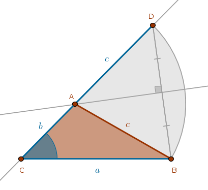

Given
\(a\), \(b + c\), \(\angle C\) - one side, the sum of the remaining two sides and the included angle
Analysis
Let us assume that the required triangle \(ABC\) has been constructed. From ECons we know how to construct the sum of two line segments. However, since the sides of the assumed triangle are known, all we need to do is extend the line segment \(CA\) and construct a \(Cir(A, c)\) which will intersect the \(CA\)'s extension at the point \(D\) such that the line segment \(CD\) will be equal to the given sum of the sides \(b\) and \(c\).
If we treat that sum:
$$b + c$$as a side of a triangle then we can construct such a triangle, \(\triangle CDB\) for example, given two sides, \(a\) and \(b + c\), and the included angle \(C\), see sas construction:
From the definition of the \(Cir(A, c)\) it follows that the vertex \(A\) is equidistant from \(B\) and \(D\) and the locus of all such points is \(BD\)'s perpendicular bisector whose intersection with \(CD\) or \(b + c\) locates \(A\).
Construction Outline
Construct a triangle \(CDB\) using the two given line segments, \(a\) and \(b + c\), and the included angle \(C\). Construct the line segment \(BD\) and bisect it. The intersection of \(CD\) and \(BD\)'s bisector locates \(A\)
Sample Construction
\(\blacksquare\)